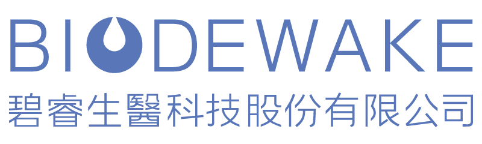
Brand Analysis / Visual PPT
碧睿生醫
天然植萃 × 科技實證
從官網資料整理品牌定位、原料故事、產品線與 AI 顧問視角，製作成圖文精美版 HTML PPT。
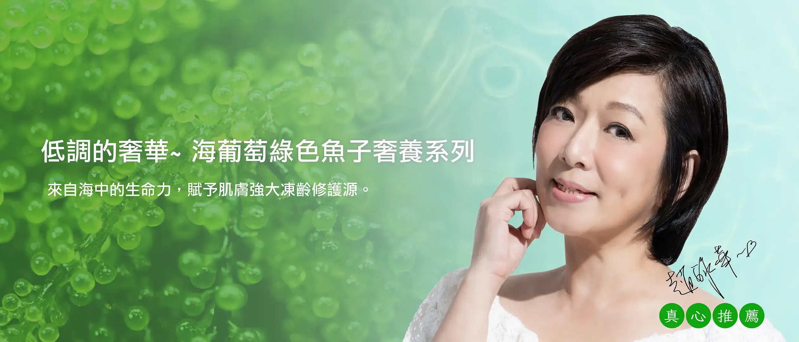
官方主視覺
從官網資料整理品牌定位、原料故事、產品線與 AI 顧問視角，製作成圖文精美版 HTML PPT。

官方主視覺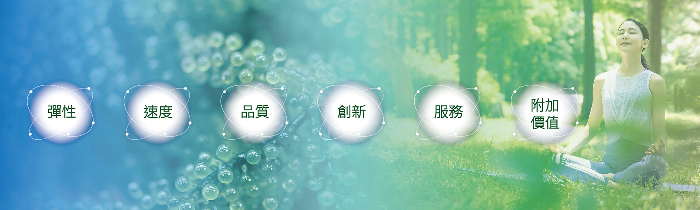
網站圖像｜核心能力碧睿生醫以自行養殖的原物料為起點，透過研究實驗、試用回饋與製程調整，開發保養品與營養保健食品。
從海葡萄、冰花等天然植萃出發，強調來源控管。
結合專業機構研究與檢測，主張單純、實證、有效。
挖掘大自然中的天然食材，作為保養與保健原料基底。
以檢測儀器與科技應用，尋找最佳保養與預防根源。
在愛自己的前提下，給予自己愛與美，追求生命美好。
文文分析：這個品牌敘事適合走「台灣自有原料 + 科技植萃 + 溫柔生活美學」路線。
官網明確列出六大價值，適合重製成投影片上的品牌策略雷達。
天然綠色原料、植萃根基。
務實有效、好用且值得採購。
ESG、簡化設計、友善自然。
GMP、ISO22716、產學合作。
科技化、實用性、提升體驗。
對客戶、供應鏈、員工以互信為基礎。
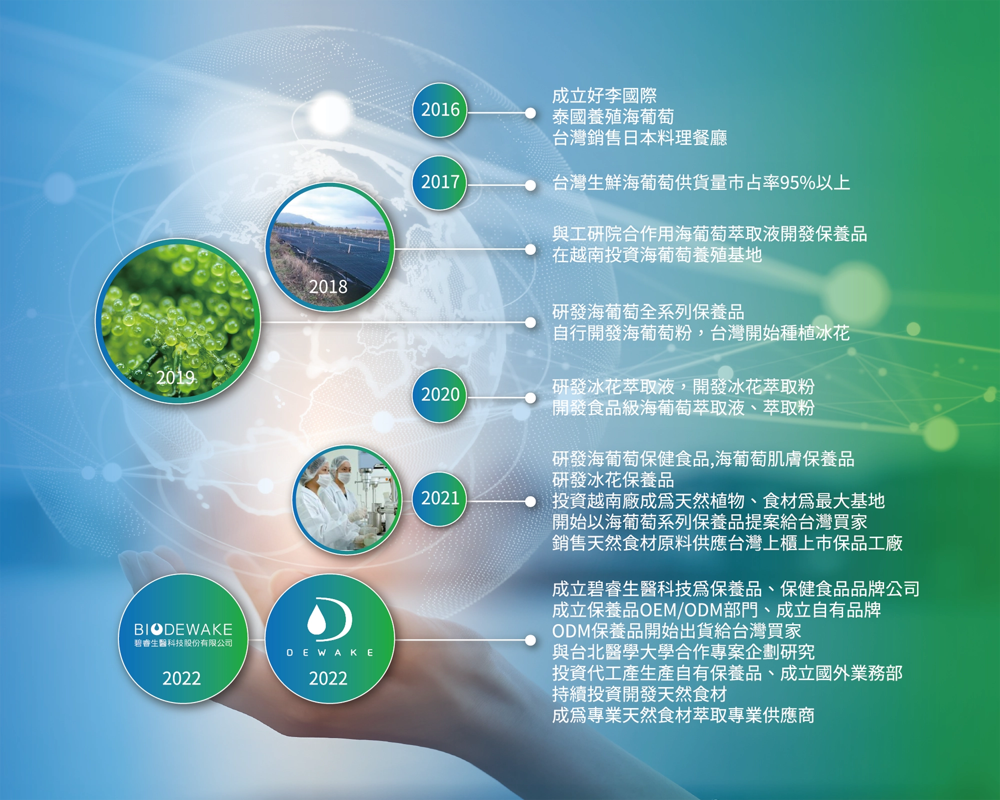
網站圖像｜發展歷程官網提到：自 2016 年以天然綠色食材海葡萄開始，花近三年半讓國人從「吃」認識海葡萄，同期研發海葡萄系列保養品，並啟動冰花養殖。
從天然綠色食材切入。
先讓消費者認識生鮮海葡萄。
試用回饋、質感調整、功效確認。
保養、保健、母嬰、運動、寵物。
海葡萄是一種長莖綠藻，官網稱為「綠色魚子醬」。碧睿把它從食材認知延伸到保養品與保健品原料故事。
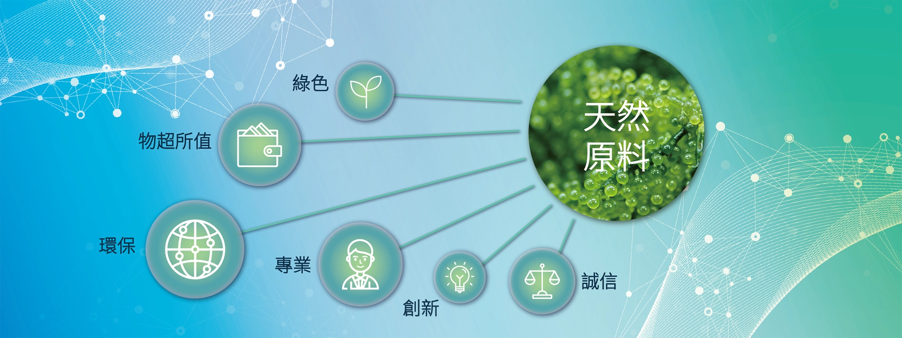
天然原料意象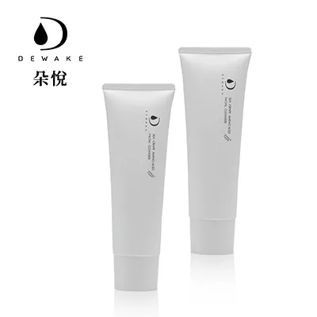
潔顏乳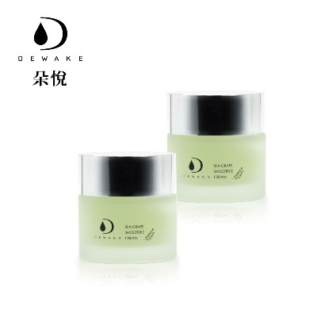
冰沙凝霜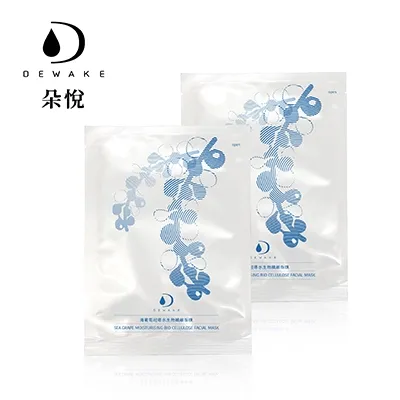
生物纖維面膜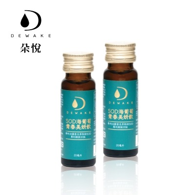
SOD 美妍飲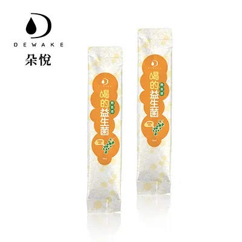
熱去活益生菌文文分析：這套產品線已具備「外用保養 + 內在保健」的完整美容健康敘事，可包裝成由內而外的植萃保養方案。
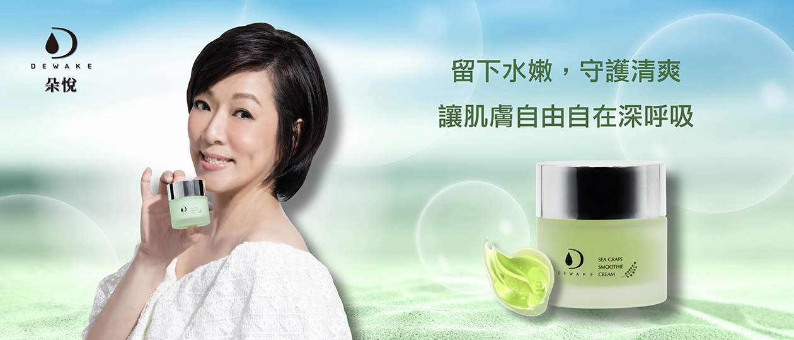
保養品主視覺愛用者回饋中反覆出現的關鍵字包含：溫和不刺激、天然植萃、保濕、水亮、上妝服貼、夏天清爽、曬後舒緩。
網站產品包含 SOD 海葡萄青春美妍飲與喝的熱去活益生菌，讓品牌不只停留在外用保養，也能延伸至日常營養保健。
「從肌膚表面到身體內在，以海葡萄植萃建立每日保養儀式。」
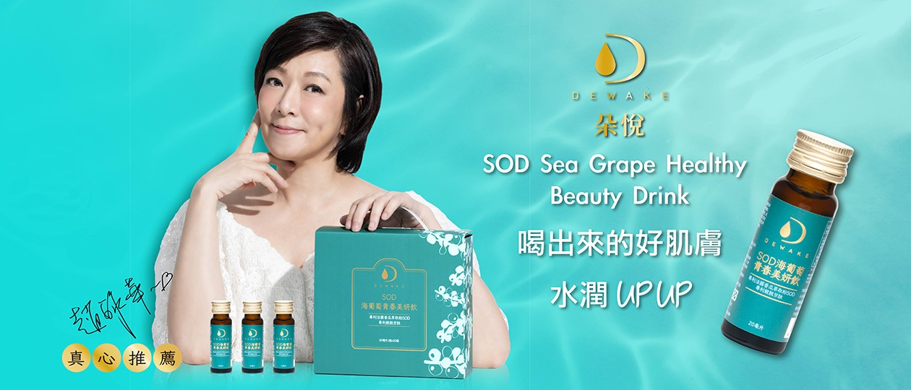
保健品主視覺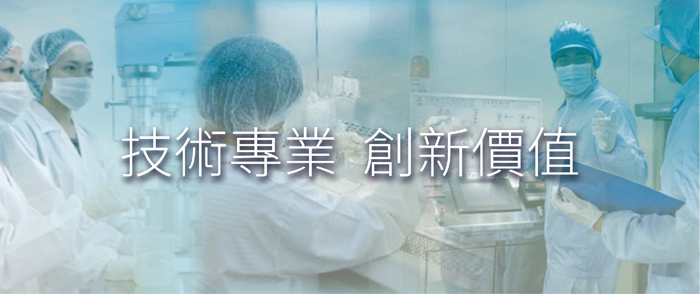
碧睿匠心品牌強調選擇一條難走的路：原料從頭到尾自行培育、開發養殖，並與工研院、台北醫學大學相關專業人員合作。
砷、鉛、鎘、汞、銻、鋇、鎳、硒。
總生菌數、大腸桿菌、金黃色葡萄球菌、綠膿桿菌。
保濕、水亮、清爽、不黏膩、洗後不緊繃。
夏季曬後、妝前急救、旅行外出、敏弱肌日常。
海葡萄、金縷梅、金盞花、極地雪藻、海藻玻尿酸。
生物纖維面膜、可分解、環境友善。
文文分析：這些回饋可進一步整理成廣告素材、商品頁 FAQ、LINE 客服話術與會員分眾推薦理由。
整理成分、用法、適合膚質、搭配組合與注意事項。
依官網、產品頁、FAQ 與回饋生成一致回答。
把愛用者回饋轉為短影音腳本、貼文、EDM、LINE 文案。
依膚況、季節、預算與使用場景推薦組合。
讓門市、客服、合作方統一理解品牌話術與產品邏輯。
碧睿生醫最有價值的不是單一產品，而是「台灣自有原料」到「科技實證保養」的完整故事。
下一步若要做 AI 化，應把品牌故事、產品知識、愛用者回饋與銷售場景整理成可重複使用的 AI Skills。
資料來源：biodewake.com 官方網站；簡報整理與圖文設計：文文
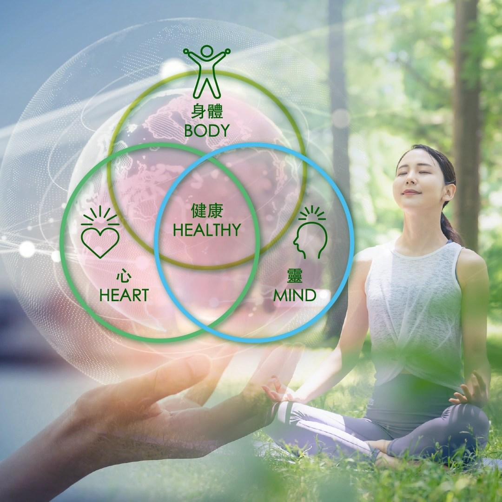
理念願景